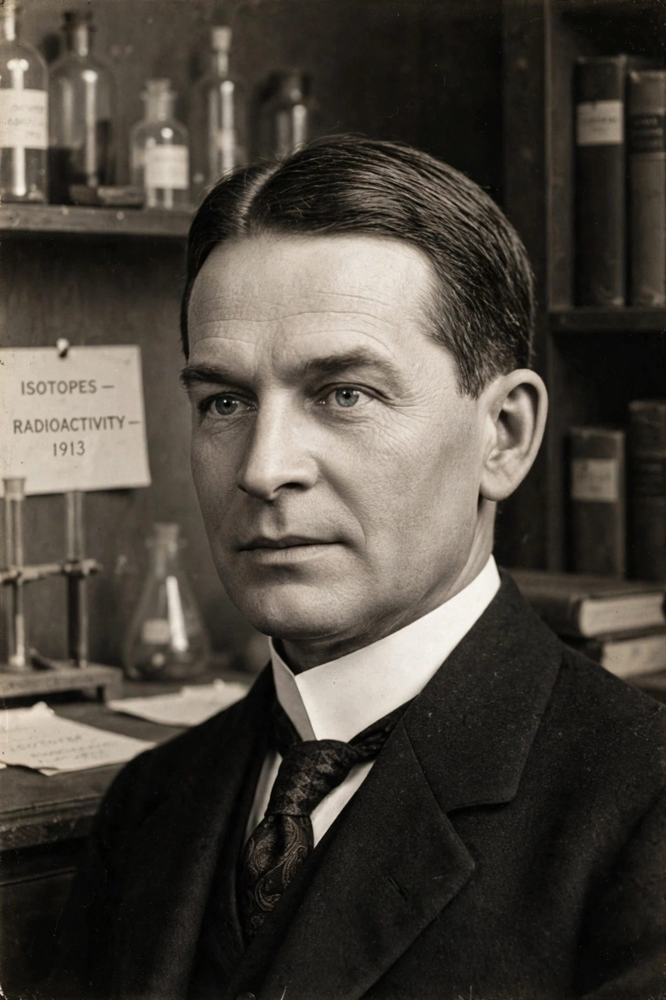

Frederick Soddy FRS (2 September 1877 – 22 September 1956) was an English radiochemist who explained, with Ernest Rutherford, that radioactivity is the transmutation of one element into another. He received the Nobel Prize in Chemistry in 1921.

At McGill with Rutherford he developed the disintegration theory; at Glasgow he coined the term 'isotope' (1913, suggested by Margaret Todd) for atoms chemically identical but differing in mass, and formulated the radioactive displacement law. With William Ramsay he showed helium forms from radium decay.
As professor at Oxford he turned increasingly to economics and social criticism, writing on monetary reform and the implications of atomic energy.